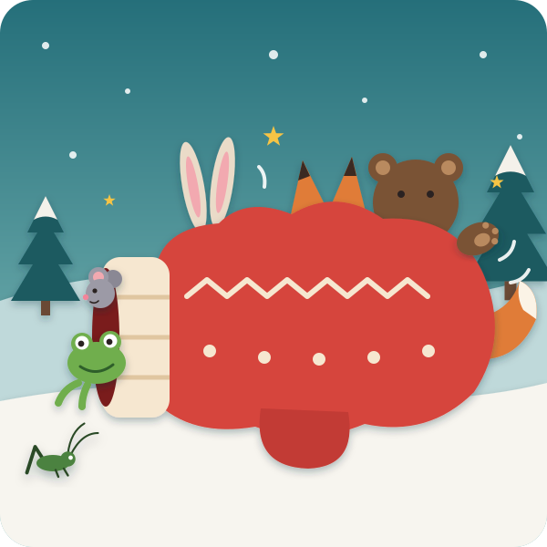
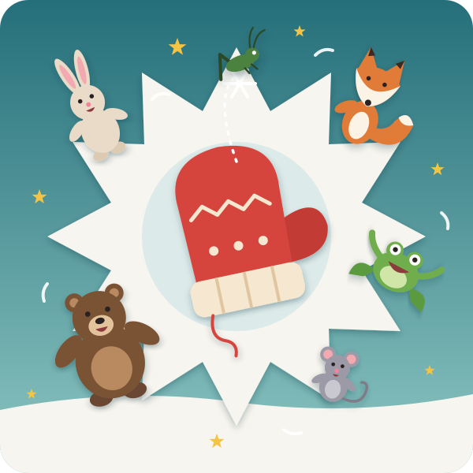

Once upon a time, at the edge of a big, white, snowy forest, there lived a little girl called Mila and her grandma.
One evening Grandma sat by the fire, and her knitting needles went click-clack, click-clack, click-clack. click your tongue with me And when she was finished, she held up a pair of mittens — red as strawberries, soft as kittens, and warm as a hug.
"Wear them in the forest," said Grandma, "and don't you lose them!"
"I won't!" said Mila.
The next morning Mila went crunch, crunch, crunch through the snow to collect sticks for the fire. She bent down to pick up a stick — and, oh dear, one little red mitten slipped off her hand and fell — plop — into the soft snow. Mila didn't even notice. She went crunch, crunch, crunch all the way home.
And there lay the mitten, all alone, in the middle of the snowy forest.
Along came a little Mouse, scritch-scratch, with a cold, cold nose. She saw the red mitten and said:
"Knock, knock! Who lives in the mitten?"
Nobody answered. So Mouse wriggled inside. Oh, it was warm! "This is my house now," said Mouse. How many animals are in the mitten? Kai: "One!"
Then along came a Frog, hop, hop, hop, shivering. "Brrr-ibbit!" She saw the mitten and said:
"Knock, knock! Who lives in the mitten?"
"I'm Mouse, the scritch-scratcher! Who are you?"
"I'm Frog, the hop-hopper. Please may I come in?"
"Come in!" So Frog squeezed in next to Mouse. How many now? Kai: "Two!"
Then along came a Rabbit, bounce, bounce, with long ears all frosty.
"Knock, knock! Who lives in the mitten?"
"I'm Mouse, the scritch-scratcher!" "I'm Frog, the hop-hopper! Who are you?"
"I'm Rabbit, the bouncy-jumper. Please may I come in?"
"Come in!" And the mitten stretched a little bit… eeeee… and Rabbit squeezed in. How many now? Kai: "Three!"
Then along came a Fox, tip-toe, tip-toe, with a big fluffy tail.
"Knock, knock! Who lives in the mitten?"
"I'm Mouse, the scritch-scratcher!" "I'm Frog, the hop-hopper!" "I'm Rabbit, the bouncy-jumper! Who are you?"
"I'm Fox, the fluffy-tail. Please may I come in? Oh, my paws are so cold."
"Come in!" And the mitten stretched… eeeeeeee… and Fox squeezed in, and tucked her fluffy tail around everybody like a blanket. How many now? Kai: "Four!"
Then — stomp… stomp… STOMP — stomp your feet, or pat your knees along came a great big Bear. He was enormous. He was furry. And he was very, very cold.
"Knock, knock! Who lives in the mitten?"
Everybody shouted together: "Mouse! Frog! Rabbit! Fox! And it's FULL!"
Bear's big face went sad. "Oh," he said, in a small voice for such a big bear. "But I'm so cold…"
The animals looked at each other. Then Mouse said, "Well… maybe if we all breathe in…"
So everybody breathed in — hhhhhhup! breathe in big with me — and the mitten stretched, and stretched, and STRETCHED… and Bear squeezed in, bottom first. Now there were ears sticking out, and tails sticking out, and one bear paw sticking out. How many now? Kai: "Five!"

It was very cosy. It was very squashy. And then — the tiniest voice you ever heard:
"knock, knock… who lives in the mitten?"
Everybody looked down. There, on the snow, was a teeny, tiny Cricket, no bigger than your fingernail, with long, wiggly whiskers.
"I'm Cricket, the chirpy-chirper," she said. "Please may I come in? I'm so very small."
Mouse looked at Frog. Frog looked at Rabbit. Rabbit looked at Fox. And Fox looked at Bear. And Bear said, "Of course you can. There's always room for one more."
So Cricket hopped in — hop! — and landed right on the end of Bear's nose. And her long, wiggly whiskers went tickle… tickle… tickle…
Bear's nose began to twitch.
"Ah… ah… ah… AH… CHOOOOOO!"
big sneeze together — count Kai in: 1, 2, 3!
POP! The mitten burst open, and out flew all the animals — up, up into the air! Mouse went one way, Frog went another, Rabbit did a somersault, Fox did a twirl, Bear rolled like a big brown snowball, and Cricket rode on a snowflake. They landed — flump, flump, flump — in the soft snow, and they laughed and laughed and laughed. Nobody was hurt one tiny bit. Then they shook off the snow and ran home to their own warm burrows and dens for supper.

A little while later, Mila came running back through the forest, crunch, crunch, crunch. "My mitten! My mitten!" And there it was, lying in the snow.
She picked it up. It was very big now, and very stretchy. It had a bit of fox fluff on it, and a frog footprint, and it smelled… a little bit… like bear.
Mila took it home to Grandma. Grandma held up the little mitten and the big, stretchy mitten, side by side. "Now how," said Grandma, "did that happen?"
Mila didn't know. Do you know? let Kai tell Grandma